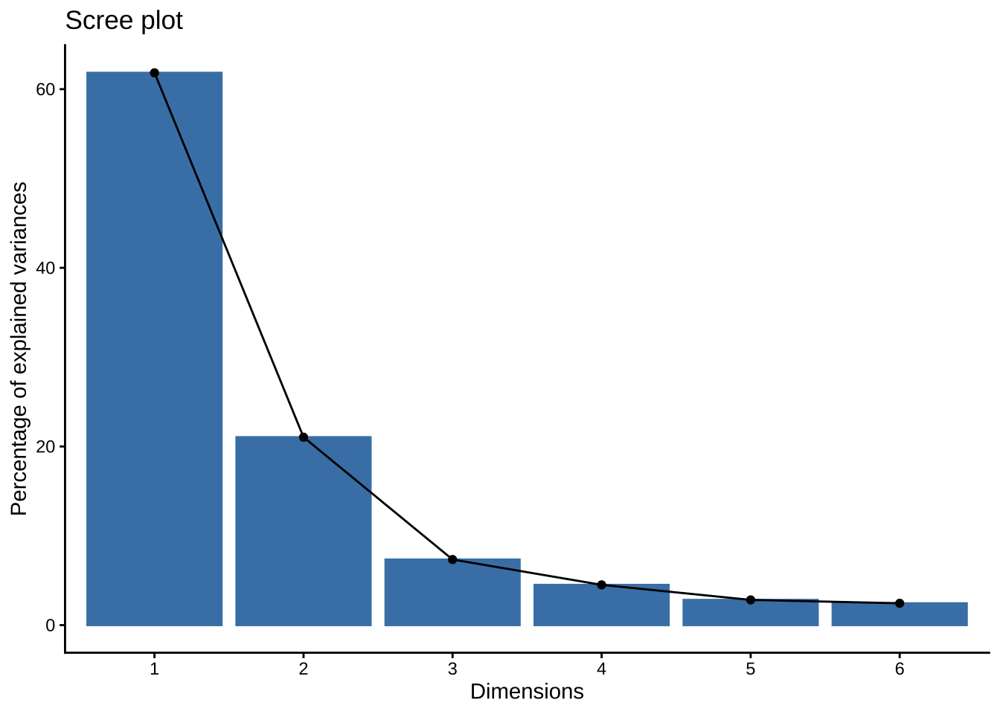
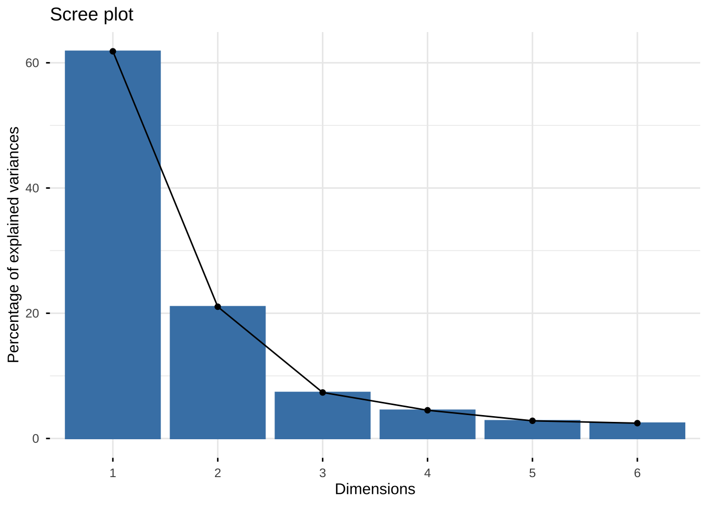
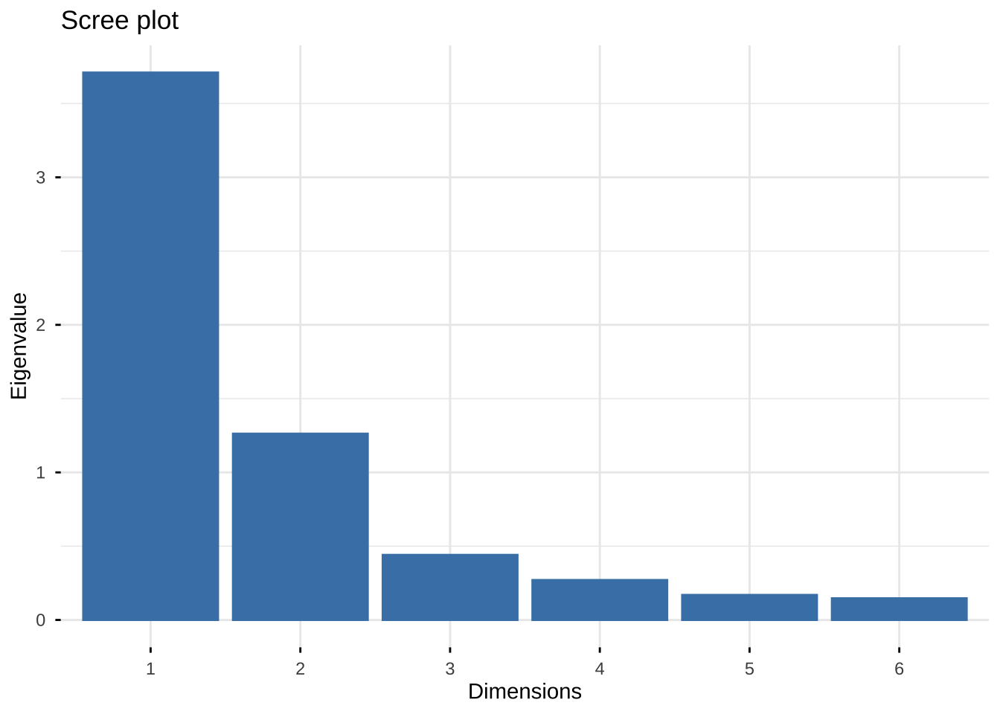
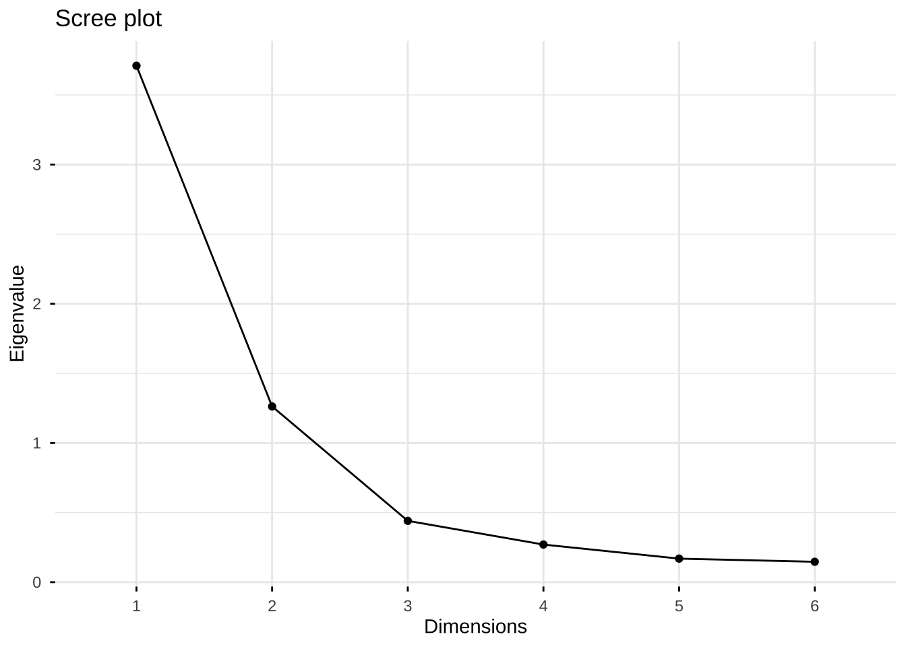
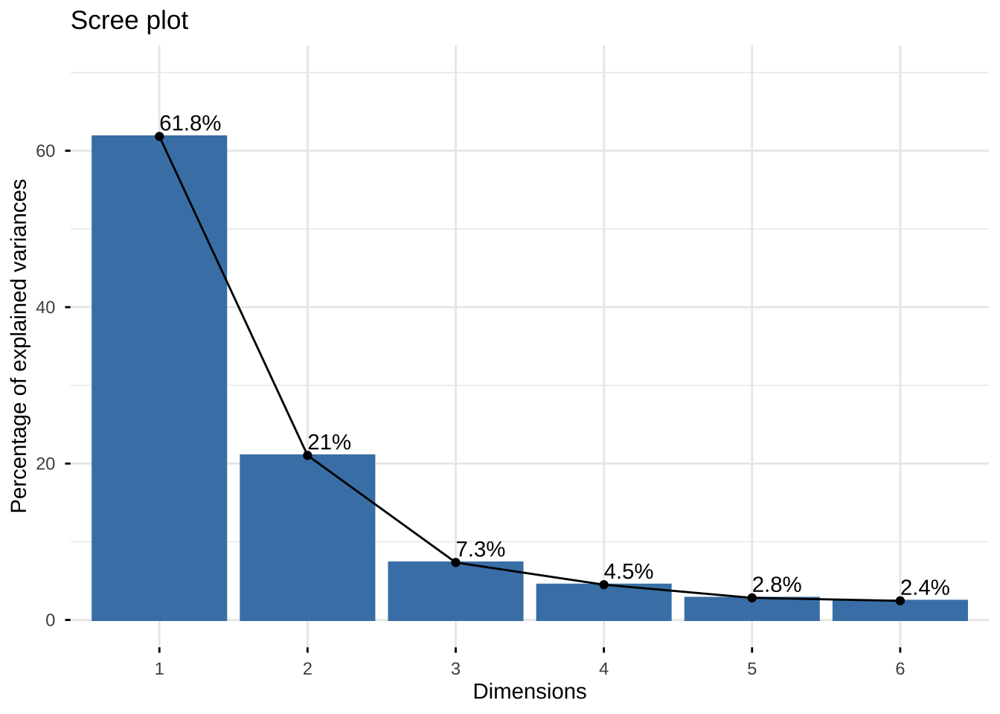
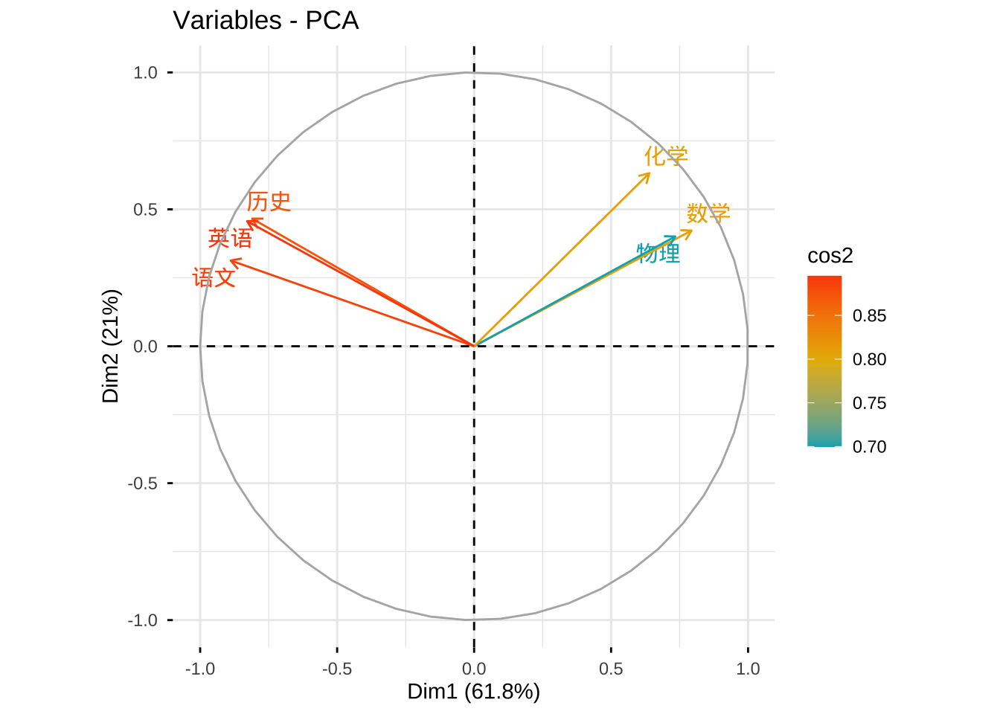
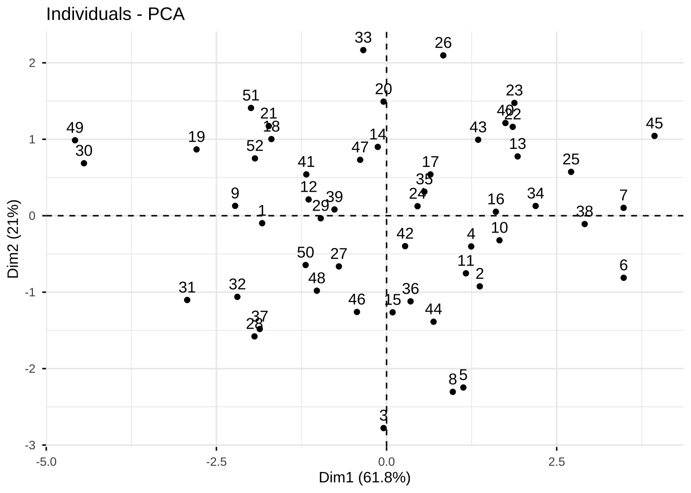
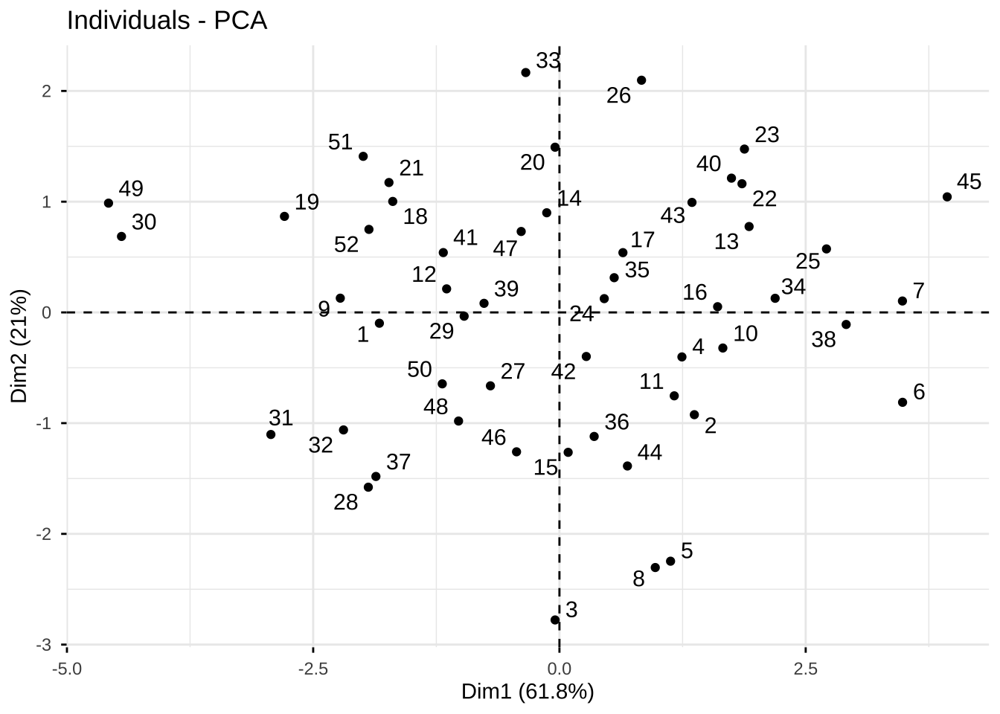
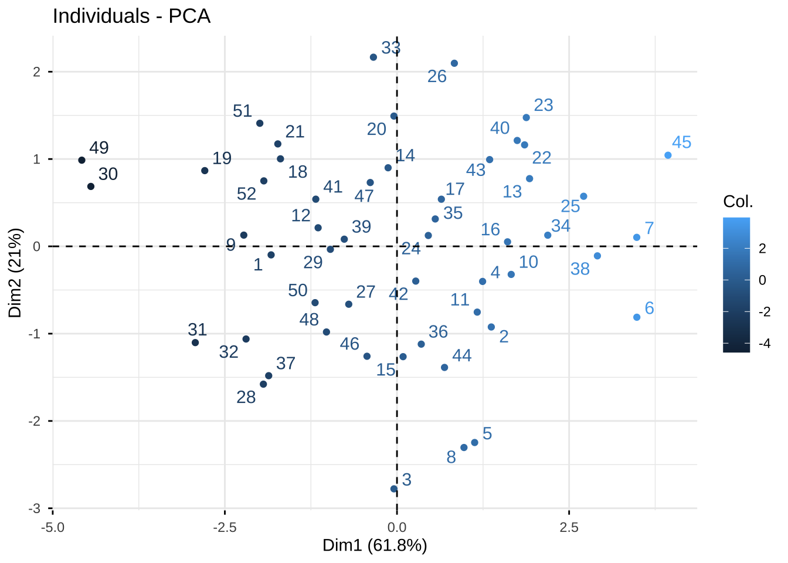
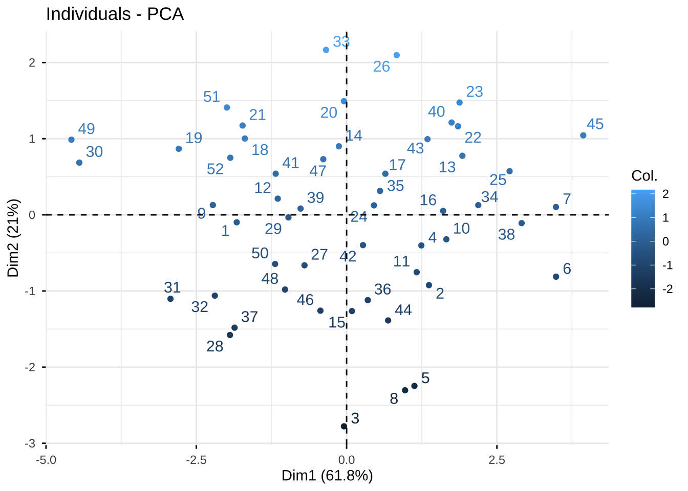

点击下载数据文件: eg6.1.csv
点击下载数据文件: eg6.1.csv install.packages("tidyverse")
install.packages("factoextra")
install.packages("MASS")
install.packages("psych")6 PCA在R中的实现
本章介绍R中的主成分分析。
数据文件
安装包
加载包
library(tidyverse)
library(factoextra)
library(psych)读取数据
library(readr)
eg6_1 <- read_csv("eg6.1.csv")
eg6_1 <- eg6_1 %>% rename(数学 = x1,
物理 = x2,
化学 = x3,
语文 = x4,
历史 = x5,
英语 = x6)1 评估变量相关性
1.1 KMO
library(psych)
KMO(eg6_1)Kaiser-Meyer-Olkin factor adequacy
Call: KMO(r = eg6_1)
Overall MSA = 0.8
MSA for each item =
数学 物理 化学 语文 历史 英语
0.80 0.83 0.76 0.84 0.81 0.78 1.2 Bartlett’s Test
bartlett.test(eg6_1)
Bartlett test of homogeneity of variances
data: eg6_1
Bartlett's K-squared = 13.025, df = 5, p-value = 0.023152 估计主成分
eg6_1.pr <- prcomp(eg6_1, scale = TRUE)
eg6_1.prStandard deviations (1, .., p=6):
[1] 1.9261112 1.1236019 0.6639552 0.5200978 0.4117231 0.3830929
Rotation (n x k) = (6 x 6):
PC1 PC2 PC3 PC4 PC5 PC6
数学 0.4120520 0.3759773 0.21582978 -0.78801362 -0.0205822 0.14450829
物理 0.3811779 0.3567060 -0.80555264 0.11755209 0.2120360 -0.14061074
化学 0.3321347 0.5626165 0.46743533 0.58763655 -0.0333622 0.09068468
语文 -0.4611846 0.2785231 -0.04426879 -0.02783261 0.5990449 0.59003773
历史 -0.4205876 0.4147836 -0.25039004 -0.03376008 -0.7384344 0.20479353
英语 -0.4301372 0.4065022 0.14612244 -0.13410793 0.2221800 -0.749024273 计算方差累计贡献率
summary(eg6_1.pr)Importance of components:
PC1 PC2 PC3 PC4 PC5 PC6
Standard deviation 1.9261 1.1236 0.66396 0.52010 0.41172 0.38309
Proportion of Variance 0.6183 0.2104 0.07347 0.04508 0.02825 0.02446
Cumulative Proportion 0.6183 0.8287 0.90220 0.94729 0.97554 1.000004 碎石图
library(factoextra)
fviz_eig(eg6_1.pr) + theme_classic()
纵轴代表特征值，也就是主成分的方差
fviz_eig(eg6_1.pr, choice = c("eigenvalue"))纵轴代表方差贡献百分比
fviz_eig(eg6_1.pr, choice = c("variance"))
只显示柱体
fviz_eig(eg6_1.pr,
choice = c("eigenvalue"),
geom = c("bar"))
只画折线
fviz_eig(eg6_1.pr, choice = c("eigenvalue"),
geom = c("line"))
#标注方差贡献率
fviz_eig(eg6_1.pr,
addlabels = TRUE,
ylim = c(0, 70))
5 PCA分析的可视化
5.1 相关图 variable correlation circle
用于理解主成分与原始变量的关系、概括主成分的含义
正相关的变量指向一个方向
负相关的变量指向相反的方向
原始变量的箭头长度(cos2)越长（越接近圆圈），代表该变量对主成分的贡献越大。
原始变量的箭头长度越短（越接近圆心），代表该变量对主成分的贡献越小。
library(factoextra)
eg6_1.pr <- prcomp(eg6_1, scale = TRUE)
eg6_1.pr$rotation[,1:2] #查看前两个主成分的载荷 PC1 PC2
数学 0.4120520 0.3759773
物理 0.3811779 0.3567060
化学 0.3321347 0.5626165
语文 -0.4611846 0.2785231
历史 -0.4205876 0.4147836
英语 -0.4301372 0.4065022cos2越高，代表主成分对该原始变量的代表性越好
fviz_pca_var(eg6_1.pr,
col.var = "cos2",
gradient.cols = c("#00AFBB", "#E7B800", "#FC4E07") ,
repel = TRUE # Avoid text overlapping
)
5.2 主成分得分
library(factoextra)
fviz_pca_ind(eg6_1.pr)
#不要遮挡标签
fviz_pca_ind(eg6_1.pr, repel = TRUE)
#给点加上颜色，第1主成分得分映射颜色
#查看第1主成分得分低或者得分高的个案，理解第一主成分的含义
fviz_pca_ind(eg6_1.pr,
repel = TRUE,
col.ind = eg6_1.pr$x[,1])
#给点加上颜色，第2主成分得分映射颜色
fviz_pca_ind(eg6_1.pr, repel = TRUE,
col.ind = eg6_1.pr$x[,2])